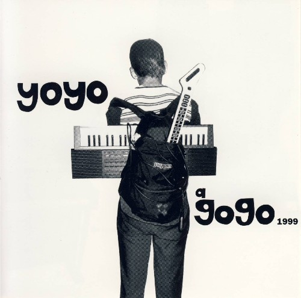

yoyo a gogo 1999

title: yoyo a gogo 1999
format: cd/lp
- c average - the legend of the two: i. dark harbour ii. green mountain air ways iii. illgagaard forever
- mirah - heart
- the Mountain Goats west country dream
- mecca normal - beaten down
- marine research - at the lost and found
- the mools - bonchi no natsu (summer in the basin)
- sleater-kenney - banned from the end of the world
- ramsted - asian muse
- bratmobile - kiss and ride
- the need - dark sally
- super duo - postage
- old time relijun - siren
- the lowdown - apples & oranges
- the tight bros from way back when - show me
- red monkey - ain't nothing but an incidiary device
- the cannanes - vivienne
- loud machine 0.5 - gimmie some noise
- the microphones - ocian one two three
- rebecca pearcy - you go on
- the crabs - love hate
- negativeland encore: the immortal words of casey kasem as performed by the entire audience of yoyo a go go (all 700 of them)
please mail any questions/comments/complaints, or just notes hello to:nall@themountaingoats.net